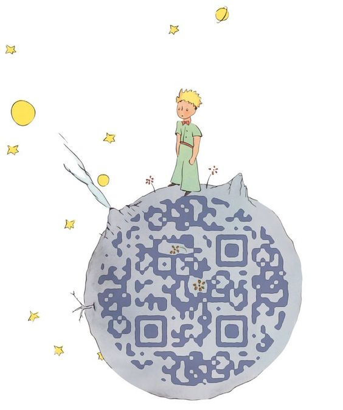
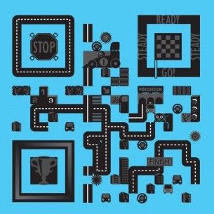

The Little Prince.

Chinese Seal! What a great idea!

M&M'S Chocolate.
P.Diddy. This could make a really good business card!

QR Code maked with french fried and ketchup.

For HBO's True Blood season 3.
A really creative QR code that is consist of Chinese character and Chinese seal!!

Won't it attract you if the QR Code is the tatoo of a beauty?

An online jewel store named Stone Henge from Korea.
QR code on guitar picks.

This clever code from Patrick Donnelly is made up of bottle tops and links to the beer company's mobile page.
The Fillmore.

The curiosity project: scan for a new inspiration.


Corkbin.

Cho Sam made this for its Youtube channel.

Chances are you've already seen SET's "Help Japan" design. As well as extending the code to make an instantly recognizable red cross, the faux parts of the code contain related symbols for an arresting overall effect.

PIECE TO PEACE (USA)
Angry Birds!

It links to a Japanese website named "MARC JACOBS". Although I am not sure what is it about, I know some catoon fans would be crazy about this QR Code.

This is an awesome QR Code in the Fingerprint.

QR Code Guitar!

The Paper Tiger - Made for Perceptive Software

Created by the artist Yiying Lu.

Wow! Do you remember this old fashion game?!

Don't curse the darkness. Light a candle.

One of the first ever creative QR codes for Louis Vuitton
Lovely QR Code Cattle!

Anna Wintour QR code.

Bonjour a Paris!

Lemon life.
QReo, created by ad agency Redpepper, is a fully scannable QR Code made entirely out of Oreo cookies.
QR code made from pencil shavings!
ZOPHIA.

QR code design for Roquefort Papillon

An overhead view of the buidings.

Aha! A drinkable QR Code!

This rocket is provided by Rod Hunt website.
Hi Mario! My childhood friend!

DonnaKaran

Provided by PALPH LAUREN.
Diageo Wines.

QR code in chelsea parade ground.
QR code in the eye.

Facebook.

Provided by SalonjoVon.

A delicious QR Code from Kerean.

Q-Recycling!

May be the world’s first QR Code made from rubik’s cubes.
Come on! Welcome to the cate world!

Warner Brothers Japan.

It must be made by car sellers.

9/11 Tribute QR Code. Scan decodes to 911 Memorial microsit
It's not a simple calender.

Can you see the QR Code in sushi?

Chocolate printing!

Time magazine.

This QR Code made of cobblestones in Chiado provides tourist information on your smartphone!

Lovely.

QR Codes by Am I Collective

Alberta family's corn maze! Probably is the world's biggest QR code!

Herbert Hoover created this wooden ring with a QR4 code cleverly laser cut into it as part of his ring-a-day project.
A delicious QR code. Made by cabreraluengo

QR code on wall with post its.

A romantic QR Code.

Guess i'll have to drink a Guiness to reveal the QR Code.
Sugar cube QR code
Scan with your phone to take a tour of School of Rock!

Provided by www.mtv.com

Running for you.
Ninth Workshop.

Scan the QR Code above with your Smartphone to view our Earth Day themed mobilized website.
Nissan.
Provided by C21 from UK.

Lovely QR code by Disney in Japan

Try to make your "Face Code" in this website: http://research.swtch.com/qr/draw?
Hey dude, I just planted a QR Code!
New York Times Anniversary Edition - QR code made from balloons!
Provided by MATROSSETTER graphic designer.

A QR Code made entirely from food.